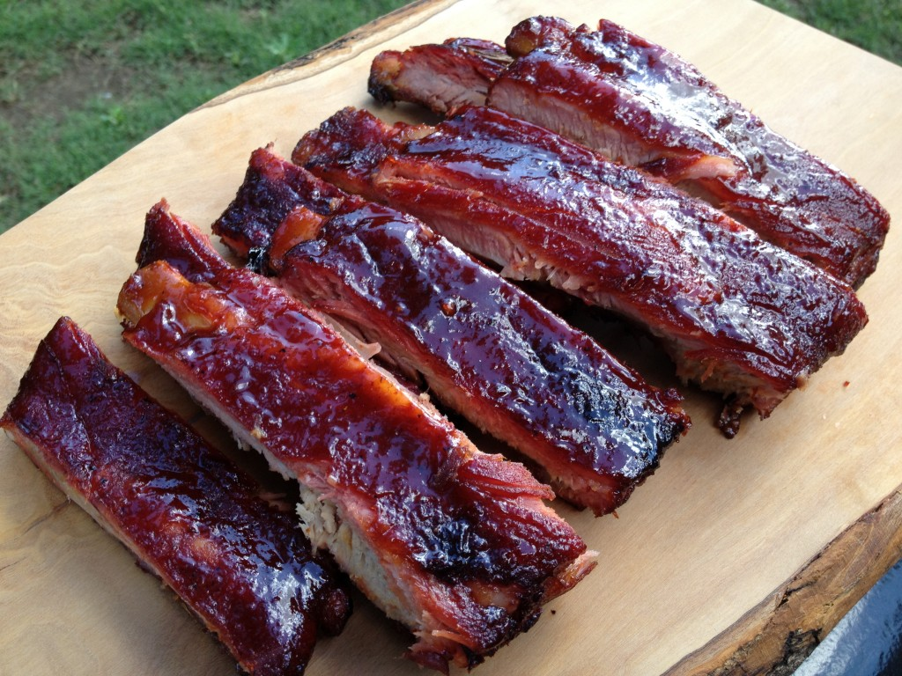

3-2-1 Ribs

St Louis style smoked ribs!
Sed faucibus, diam id sagittis ornare, nunc nulla rhoncus nulla, vitae egestas ipsum leo eget purus. Morbi bibendum quam quis nibh efficitur, sed dictum sapien fringilla. Fusce suscipit felis ac neque venenatis, a gravida elit sollicitudin. In ultricies non neque a tincidunt. Maecenas in diam at nulla finibus pharetra. In dignissim iaculis ex eu sodales. Aenean ut elit pellentesque, ornare odio ut, elementum tortor. Aliquam vestibulum, est faucibus interdum rhoncus, urna velit scelerisque sapien, et tristique magna massa sed odio. Nunc eu lacus ut eros sagittis laoreet.
Morbi efficitur, felis suscipit viverra vestibulum, diam libero aliquet est, vel facilisis purus risus non leo. Nam sed libero faucibus, aliquet nunc ac, rhoncus eros. Aenean quis magna non est elementum euismod. In sit amet pellentesque erat. Fusce dapibus nulla eu arcu efficitur feugiat. Suspendisse ultrices, lacus id volutpat efficitur, leo nisl venenatis tellus, in malesuada odio eros vitae mauris. Suspendisse lacinia augue id diam ornare, ac mollis est iaculis. Nunc quam est, varius eget dignissim sit amet, efficitur a mauris. Etiam fringilla, ipsum quis gravida suscipit, odio velit malesuada odio, non bibendum ante lorem et neque. Vivamus dignissim turpis urna, at faucibus ipsum volutpat nec. Quisque eleifend nisi vel dui consectetur, a tincidunt nulla vehicula. Ut feugiat ante ut fringilla tempus. Etiam gravida at metus ut efficitur. Orci varius natoque penatibus et magnis dis parturient montes, nascetur ridiculus mus. Phasellus faucibus, erat at finibus facilisis, lorem ante vehicula risus, ac mattis nisl orci in velit. Interdum et malesuada fames ac ante ipsum primis in faucibus.
Ingredients
- 2 Rack baby back pork ribs
- 1/3 Cup yellow mustard
- 1/2 Cup apple juice, divided
- 1 Tablespoon Worcestershire sauce
- 1/2 Cup dark brown sugar
- 1/3 Cup honey, warmed
- 1 Cup BBQ Sauce
- Pork Rub
Cooking Steps
- Remove the thin silverskin membrane from the bone-side of the ribs by working the tip of a butter knife or a screwdriver underneath the membrane over a middle bone. Use paper towels to get a firm grip, then tear the membrane off.
- In a small bowl, combine the mustard, 1/4 cup of apple juice (reserve the rest) and the Worcestershire sauce. Spread the mixture thinly on both sides of the ribs and season with Pork Rub.
- When ready to cook, set smoker temperature to 180℉ and preheat, lid closed for 15 minutes. Smoke the ribs, meat-side up for 3 hours, or until the internal temperature reaches 160℉.
- After the ribs have smoked for 3 hours, transfer them to a rimmed baking sheet and increase the grill temperature to 225℉.
- Tear off four long sheets of heavy-duty aluminum foil. Top with a rack of ribs and pull up the sides to keep the liquid enclosed. Sprinkle half the brown sugar on the rack, then top with half the honey and half the remaining apple juice. Use a bit more apple juice if you want more tender ribs. Lay another piece of foil on top and tightly crimp the edges so there is no leakage. Repeat with the remaining rack of ribs.
- Return the foiled ribs to the grill and cook for an additional 2 hours, or until internal temperature reaches 205℉.
- Carefully remove the foil from the ribs and brush the ribs on both sides with BBQ Sauce. Discard the foil. Arrange the ribs directly on the grill grate and continue to grill until the sauce tightens, 30 to 60 minutes more.
- Let the ribs rest for a few minutes before serving. Enjoy!

Home